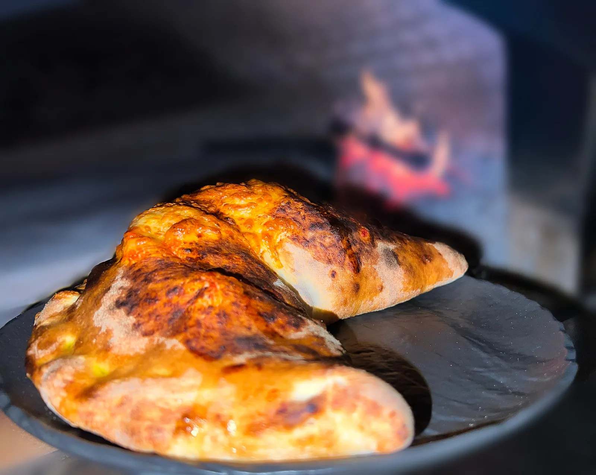
Oltre 70 pizze.
Dalla Marinara alla Montanara con porcini e olio al tartufo, fino alle novità della stagione.
Guarda le pizze
Birrificio artigianale e pizzeria ad Ariano Irpino, dal 2011.
La birra che bevi al tavolo nasce a pochi metri da te, nei nostri fermentatori.
Dal 2011 facciamo birra ad Ariano Irpino. Malto, luppolo, acqua, lievito e tempo. Nessuna scorciatoia, nessun viaggio: dal fermentatore alla spina.
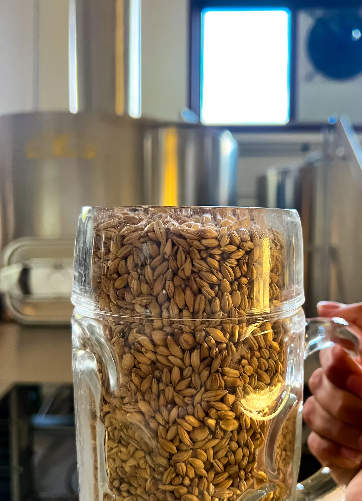
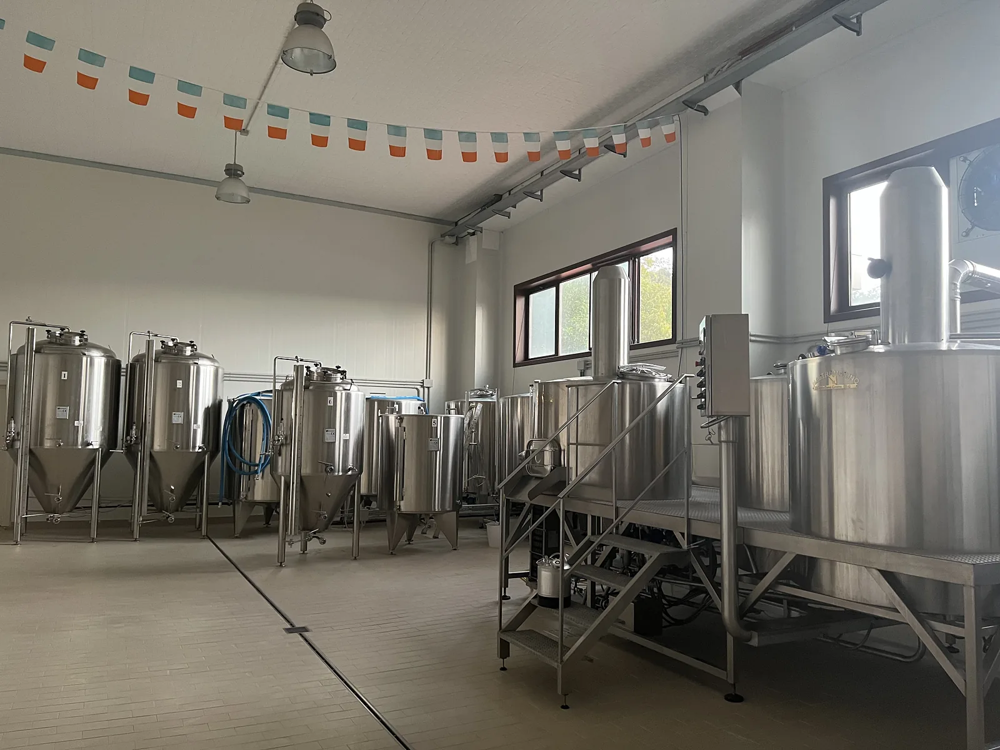
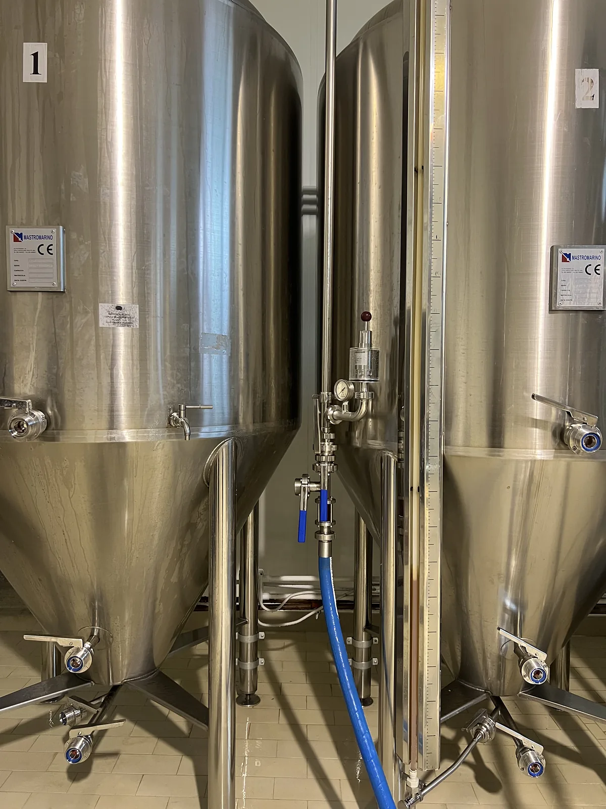
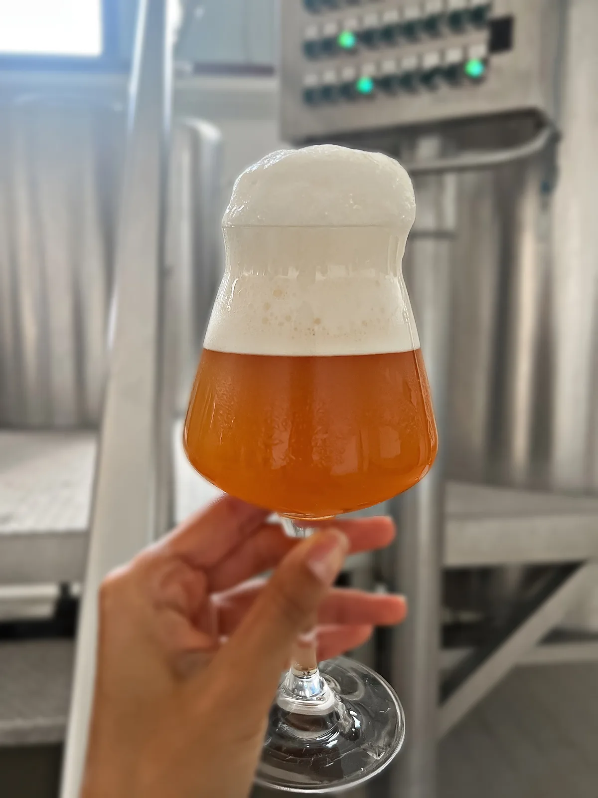
Tutto parte dall'orzo maltato: chiaro per le bionde, tostato per le ambrate. Lo scegliamo ricetta per ricetta.
Nella sala cotta il malto incontra l'acqua calda e il luppolo. Tempi e temperature fanno la differenza tra una birra e l'altra.
Il mosto passa nei fermentatori e il lievito si mette al lavoro. È qui che ogni birra trova il suo carattere.
Dal fermentatore al fusto, dal fusto alla spina. Pochi metri, per questo da noi la trovi così fresca.
Tutte prodotte nel nostro impianto. Non sai quale scegliere? Chiedi un assaggio al banco.
Pizze rosse e bianche, pinse romane, panuozzi, fagotti e fritti. Su richiesta ogni pizza si cuoce anche in padellino.

Dalla Marinara alla Montanara con porcini e olio al tartufo, fino alle novità della stagione.
Guarda le pizze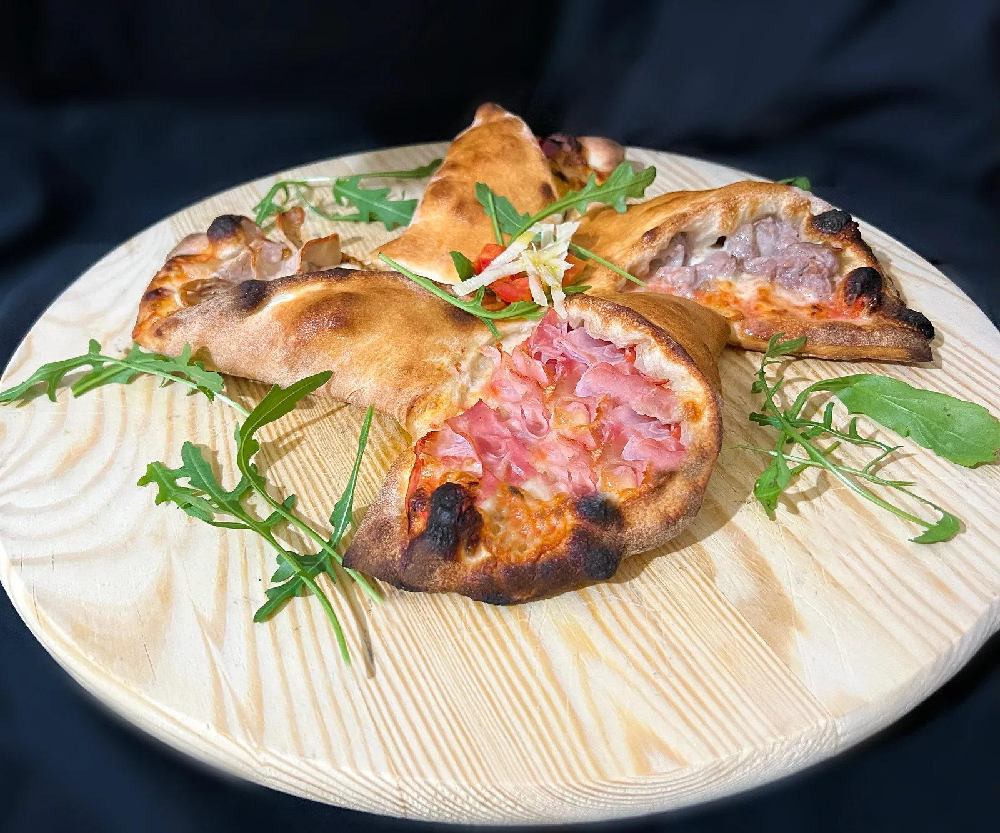
Scegli due gusti e una forma tra otto: stella, cuoppo, girandola, cannolo e altre. 13 €.
Come funziona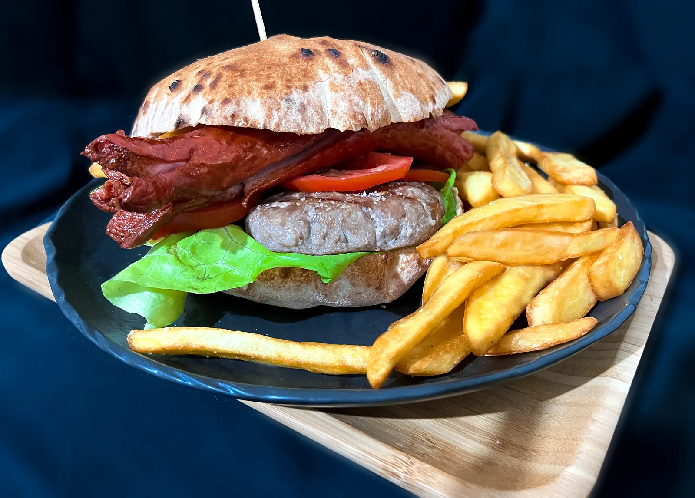
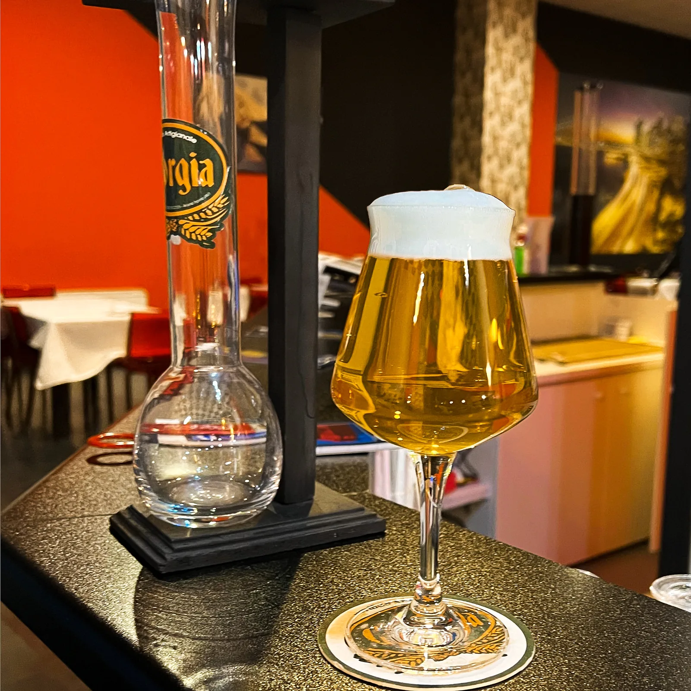
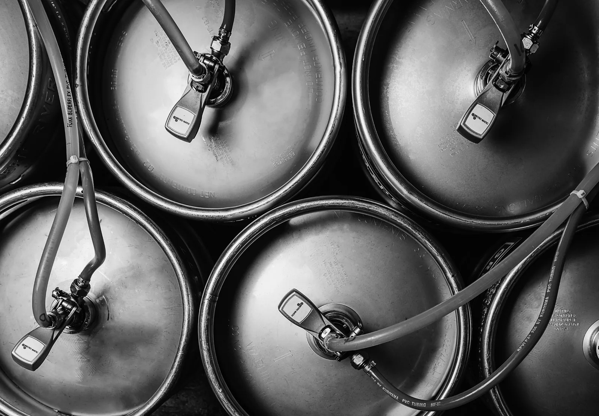
Non imbottigliamo: la nostra birra viaggia in fusto. Da noi alla spina, da te per ogni occasione.
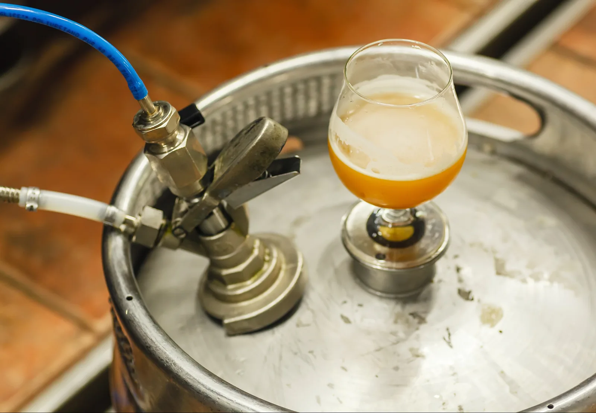
Compleanni, lauree, matrimoni. Scegli la birra, ti diciamo quanta ne serve per i tuoi ospiti.
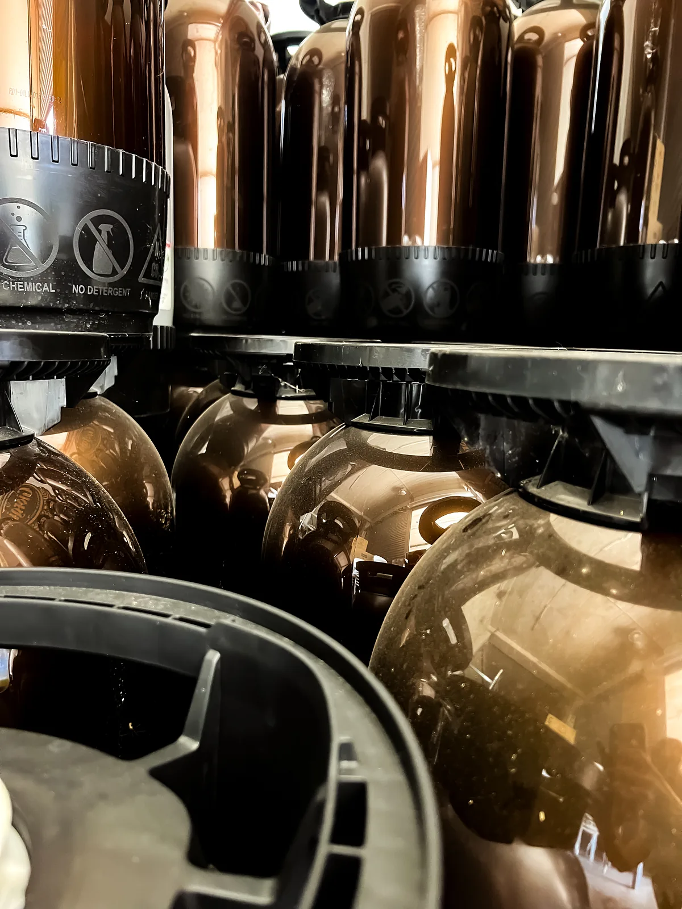
Forniture per associazioni, feste di paese ed eventi, con spillatura su richiesta.
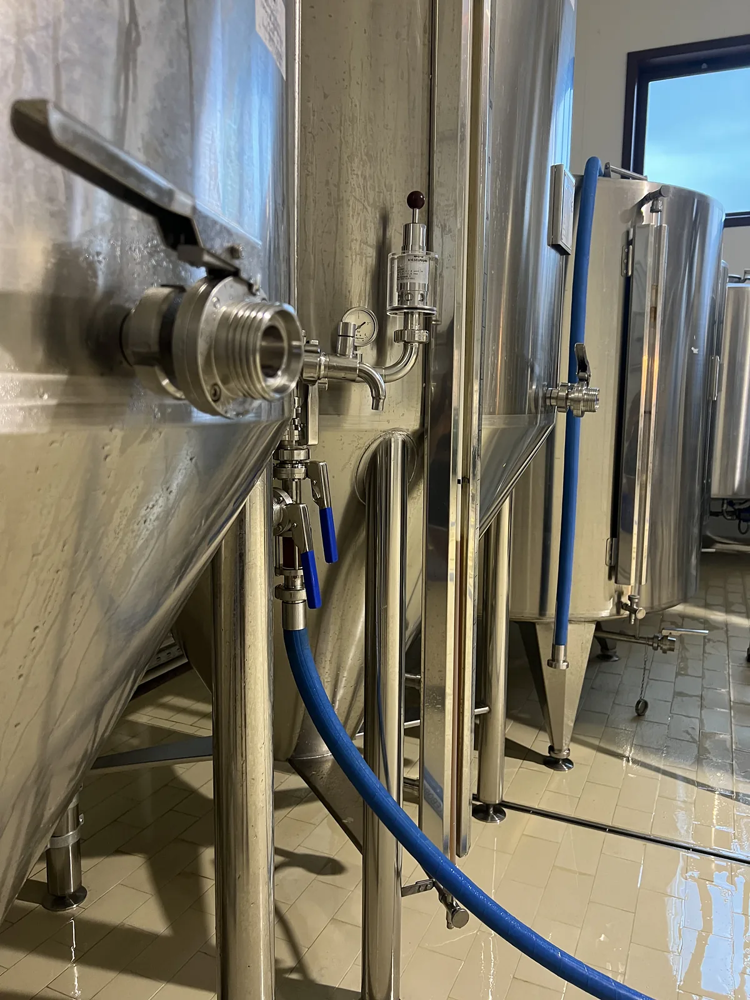
Una birra artigianale irpina alla spina nel tuo locale. Parliamone.
Scrivici la data, il numero di ospiti e la birra che preferisci. Ti rispondiamo con un preventivo.
Chiedi un preventivo su WhatsApp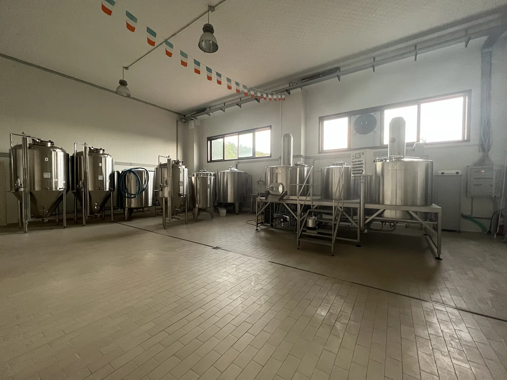
Birra e pizza ad Ariano Irpino. Vuoi vedere dove nasce la tua birra? Chiedici quando passare.